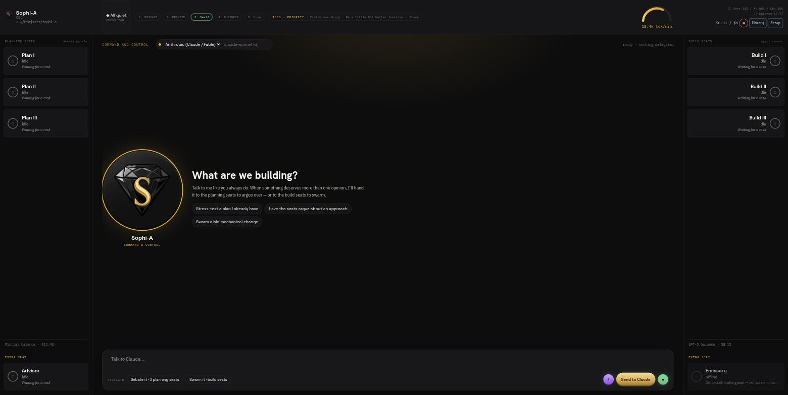
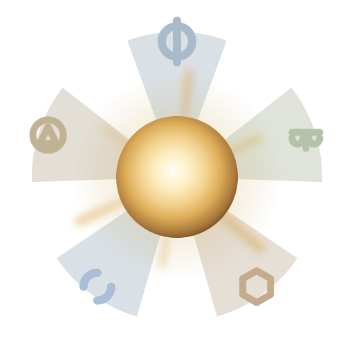

Five other labs review your plan before a line of code gets written.
Sophi-A is an open-source multi-LLM (MLLM) planning-and-build harness: instead of one model working alone, a plan drafted by one seat is graded blind by critic seats from other labs before any build seat is allowed to touch code. Bring your own Claude Code / API credentials - nothing is resold.

The real app, not a mockup - the Command Deck, one home conversation with every seat reachable in fixed side rails.
The mechanism
Sophi-A runs eight real agent seats at once: one always-on Command & Control home seat,
one Advisor, three planning seats, and three build seats (real Claude Code subprocesses).
The three planning seats don't race copies of the same model to the same answer - each one
spawns a real council chain on The High Council MCP,
where one model drafts a plan and critic seats from other labs grade it blind and
independently, on the record. The draft gets revised against their objections, and the run
ends either with unanimous sign-off or a report.json naming exactly which lab
refused and why - before any build seat writes code.

Each planning seat's Debate panel renders this seal live from that run's real
report.json - lit sigils for labs that signed off, dimmed for labs that
objected. Not a mockup state.
What this is not
Not a chat window with panels
The planning seats don't just add more chat surfaces - each spawns a real cross-lab debate chain with a written, checkable verdict file.
Not a parallel-session racer
Unlike tools that run several copies of one model racing to the same answer, critics here come from different labs and must actually agree or record why they didn't.
Not a performance claim
Sophi-A has not been measured or playtested against single-model workflows. No efficacy numbers are published here - see Status below.
Status
Pre-release, source-only. Read this plainly before relying on any of it.
True today
- Open source under Apache-2.0 - the source is the product, not a teaser for a paid build.
- No packaged/purchasable build - run it from source with
npm run tauri dev. - Vibecoded end-to-end with Claude Code; each planning seat's own plan was critiqued by the same kind of cross-lab relay chain the product ships, before a build seat wrote code.
- Not yet playtested or measured - no claim is made here about council output beating a single model.
xai/Grokis deliberately excluded from the allowed-provider list, checked in code, not just omitted from a menu.
git clone https://github.com/muad-yasin/sophi-a.git cd sophi-a npm install npm run tauri dev